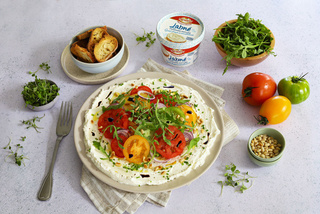

La salade de tomates est un mets traditionnel du restaurant le fiasco de Kénitra.
Elle est préparée avec des tomates fraîches, des oignons rouges, du basilic et une vinaigrette maison.
ingrédients : |
Plat |
|---|---|
|
 |